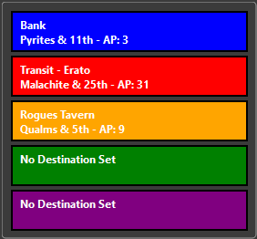
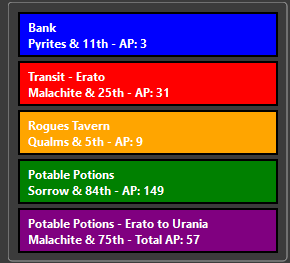
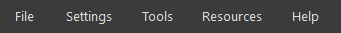

Adding, Modifying, and Removing Characters
RBCMap allows you to store multiple vampire characters, making it easy to manage alts and avoid repeated logins. All character data is stored locally and securely in your database.
Adding a Character:
- Click the Add button below the character list.
- Enter the vampire’s exact username and password.
- Click OK to save. The character will appear in the list.
Modifying a Character:
The Modify button lets you correct or update the saved name and password for an existing character. This is useful if:
- You changed your vampire’s password in the game.
- You made a typo when first adding the character.
To modify a character:
- Select the character in the list and click Modify.
- You’ll be prompted to re-enter both the vampire’s name and password.
- The saved entry will be updated with your new input.
Removing a Character:
- Select the character from the list.
- Click the Remove button.
- Confirm the deletion. This will erase the character’s login credentials and stored state from your database.
Notes:
- Data is stored locally; no credentials are ever sent outside the application except during login.
- You can manage as many characters as you like.
This feature is ideal for users managing multiple accounts, keeping track of alts, or quickly logging in after password changes.
CSS Customization Dialog
The CSS Customization Dialog allows advanced users to visually modify the appearance of the Ravenblack game interface using custom Cascading Style Sheets (CSS). These styles are injected live into the embedded webview and can be toggled per character.

CSS Profile Management
- Create, rename, or delete multiple CSS profiles.
- Assign specific profiles to characters.
- Changes are saved in the local database and re-applied automatically.
Upload CSS File
You can import a pre-written CSS file using the Upload button:
- Click Upload to browse for a
.cssfile on your system. - The contents of the file will be loaded into the current profile.
- This is ideal for importing styles created in a text editor or shared by other users.

Color Editing
- Choose text and background colors for key page areas.
- Live preview shows the effect in real time within the game window.

Background Image & Layout Options
- Set a custom background image from file.
- Choose whether the image tiles or stretches.

Advanced Styling
- Add or remove drop shadows on text and HUD elements.
- Optional manual override for raw CSS injection.
This dialog is intended for users comfortable with web styling or those who want a highly personalized UI theme.
Character Management
The Character Management system allows you to store, switch, and manage multiple vampires within RBCMap. All character data is stored locally, including login credentials, destination memory, and session state.

What You Can Do:
- Add or remove characters with their names and passwords securely stored in your local database.
- Switch between characters using stored login cookies for instant login and session recall.
- Rename or delete entries if a character is no longer in use.
- View login status and track which character is currently active.
Related Topics:
This system makes it easy to manage alts, experiment with travel paths, and resume progress across characters without manually logging in every time.
Compass Routes Dialog
The Compass Routes dialog shows the AP-efficient path to a selected destination on the minimap. It visually draws navigation lines to help guide your vampire's movement across the city grid.

You can open the Compass Routes dialog by clicking the Compass icon on the route label at the top of the map.

Green Route – Direct Path
The green line represents the shortest walking route between your current location and your selected destination.

- This is the route used when no transit stops are required or beneficial.
- Useful for short distances.
Purple Route – Transit Path
The purple line represents the most efficient known route that includes transit options such as rail or bus.

- Appears when using transit results in fewer AP spent than walking directly.
- Useful for crossing long distances.
When the Routes Appear:
- Routes update automatically whenever your destination changes.
- If no destination is set, no route will be drawn.
The Compass Routes system makes it easy to make travel decisions quickly and ensures your AP is used efficiently while navigating RavenBlack City.
Damage Calculator
The Damage Calculator estimates the number and type of weapons needed to inflict a target amount of blood damage on another vampire, based on your Charisma level. It automatically calculates which items to buy from Discount Magic and how many hits are required.

How to Use:
- Enter Target BP: Type in how much blood you want to drain from your target.
- Select Charisma Level: Choose your current Charisma level (affects cost reductions).
- Click Calculate: The dialog will show:
- Which weapons to buy
- Quantities of each
- Total cost at Discount Magic
- Total hits required
Notes:
- Only considers item prices from Discount Magic.
- Uses a fixed weapon damage formula based on typical item strength.
This tool is especially useful when preparing for a PvP fight or mass hunt. It ensures you have enough coins and inventory to fully drain your target.
Database Viewer
The Database Viewer is a read-only utility that allows you to browse the contents of RBCMap’s internal SQLite database. It is useful for understanding saved data, troubleshooting, and development insight.

Included Tables:
You can browse the following tables:
bankscharacterscoinscolor_mappingscolumns,rowscookiescss_profiles,custom_cssdestinations,recent_destinationsdiscord_serversguildslast_active_characterplacesofinterestpowerssettingsshops,shop_itemstavernstransitsuserbuildings
Features:
- View records in each table in raw tabular format.
- Quick access for debugging or verifying app state.
Note:
This dialog is read-only. For advanced editing, you can open rbc_map_data.db (located in: C:\Program Files (x86)\RBC Community Map\sessions\) using tools like DB Browser for SQLite. Be sure to back up the file before making any external changes.
File Menu
The File menu contains basic application-level options such as saving screenshots and exiting the program.

Menu Options:
- Save Webpage Screenshot: Captures only the embedded game view (web browser panel). Saves it as a PNG in the default screenshots folder.
- Save App Screenshot: Captures the entire RBCMap window, including minimap, character list, and game view. Useful for reporting bugs or archiving your current session.
- Exit: Closes the application immediately.
This menu is ideal for quickly saving a visual snapshot of your play session or exiting cleanly after use.
Help Menu
The Help menu provides access to official game information, application details, issue reporting, and this help file. It’s your go-to place when you need documentation or support.

Menu Options:
- FAQ: Opens the in-game Frequently Asked Questions page in your system's default browser.
- How to Play: Opens the in-game "How to play" page in your browser.
- About: Displays the current RBCMap version and licensing information in a dialog window.
- Credits: Rolls a short in-app credits screen showing developers, contributors, testers, and special thanks.
- Report an Issue: Opens a link to submit a bug or feature request via GitHub. (See separate help entry for details.)
- Help: Opens this Help File (CHM) from within the app. You can also press
F1at any time to access it.
Tips:
- Internet access is required for external pages (FAQ, How to Play, GitHub).
- All items open in your system browser except for "About," "Credits," and "Help," which are handled internally.
Identifying UI Parts
The labeled image below highlights the main components of the RBCMap interface. Each part is numbered and described to help you understand the layout and function of the window.

UI Component Breakdown
| # | Element | Description |
|---|---|---|
| ① | Menu Bar | Provides access to File, Settings, Tools, Resources, and Help menus. |
| ② | Navigation Bar | Back/Forward controls, compass display (when routing), and Ko-fi donation button. |
| ③ | Minimap Grid | Zoomable display of your surrounding area with route lines and icons for banks, taverns, and more. |
| ④ | Info Panel | Displays nearby known locations and AP cost to reach them. Updates live as you move. |
| ⑤ | Destination Controls | Buttons for zooming, refreshing, recentering, and opening destination dialogs. |
| ⑥ | Character List Panel | Lets you add, modify, or remove vampire accounts. The selected character is used for login and routing. |
| ⑦ | Game WebView | Displays the live RavenBlack game interface, enabling all standard in-game actions. |
These components remain visible throughout gameplay and form the core interaction points for all other dialogs and tools.
Information Bars
The information bars beneath the minimap display the most relevant nearby travel options, including the closest bank, tavern, and transit hub. When a destination is selected, they also show route comparisons to that target.
Without a Destination Set:
- Blue Bar: Nearest bank to your current location.
- Red Bar: Nearest transit hub (rail, bus, etc.).
- Goldenrod Bar: Nearest tavern.
With a Destination Set:
- Green Bar: AP cost and tile distance to the destination using a direct walking route.
- Purple Bar: AP cost and tile distance using known transit points along the route (if more efficient).
Live Updates:
- Bars refresh automatically each time you move or change destinations.
These bars provide fast, glanceable routing intelligence so you can plan each move efficiently without needing to manually check coordinates or open dialogs.
Log Viewer
The Log Viewer lets you browse saved RBCMap log files from within the app. It is useful for reviewing debug output, verifying behavior, or reporting bugs.

Features:
- Log File List: All log files are displayed by date in the left panel.
- Content Viewer: Selecting a log file displays its full contents in the right panel.
- Log Level Filters: Checkboxes let you show or hide lines by severity:
DEBUGINFOWARNINGERRORCRITICAL
- Delete Button: Permanently removes the selected log file from disk.
Use Cases:
- Quickly verify startup processes or scraper events
- Review application crashes or errors
- Trim down logs before sharing them with support
- Quick and easy access to the log files for use when filing a bug report
Additional Info:
- Log files are stored in the
C:\Program Files(x86)\RBC Community Map\logs\folder alongside the app. - Logs are created new every day and will log all messages based on the selected log level in the Settings Menu.
This viewer gives you transparent access to behind-the-scenes activity, helping you troubleshoot or track changes across sessions.
Menu Items Overview
The RBCMap main menu bar is located at the top of the application and provides access to all settings, tools, customization options, and help features.
The menu bar includes the following categories:
- File – Save screenshots or exit the application.
- Settings – Change themes, keybindings, CSS profiles, and logging level.
- Tools – Access all utility features such as log viewer, damage calculator, and database viewer.
- Resources – Quickly open relevant guides, maps, and community tools.
- Help – View help, credits, FAQ, or report bugs.
Click on any of the sections above to learn more about what each menu offers.
Minimap and Information Bars
The minimap and information panels form the core of RBCMap’s navigation system. They allow you to visualize your current location, plan movement across the grid, monitor AP costs, and quickly identify nearby landmarks like taverns, banks, and transit hubs.
The minimap displays your vampire's position, highlights routes to destinations, and overlays contextual data like direction lines and city feature markers. Below the minimap, the information bars update in real time to show AP costs, route comparisons, and your closest known points of interest.
This section includes:
- Minimap Controls – Overview of zoom controls, the recenter and refresh buttons, and the Discord / Website access shortcuts.
- Navigating the Minimap – Explains tile-clicking, dropdown routing, and how the map recenters on movement.
- Set Destination Dialog – How to set destinations using dropdowns or custom street intersections.
- Information Bars – Describes the bar under the minimap showing current location, AP cost, and nearby landmarks.
- Compass Routes – Visualizes travel paths using color-coded lines for direct and transit-based routes.
Together, these tools give you full spatial awareness in RavenBlack City, helping you move with precision, optimize AP usage, and never lose track of where you’re headed.
Minimap Controls
The control buttons located above and below the minimap allow you to quickly interact with and refresh the city grid. These controls help you navigate the map, recenter your position, zoom in or out, and open external community resources.

Control Buttons:
- Zoom In / Out: Adjusts the zoom level of the minimap grid. Zoom out to see more of the grid. Zoom in to see less of the grid. Available views are 3x3, 5x5 and 7x7.
- Recenter Minimap to Location: Select the intersection to center the minimap on with the dropdowns and click "Go" to jump to that location.
- Refresh: Safely refreshes the game screen and recenters the minimap on your current locatoin.
- Set Destination: Opens the Set Destination Dialog to choose a coordinate or location name as your routing target.
Community Integration:
- Discord Button: Opens the in-app Discord Server List window, showing official and community-run RBC servers. Clicking a server opens its invite link in your browser.
- Website Button: Opens the RBCMap official webpage or development homepage in your default browser.
These buttons are always available near the minimap and provide fast access to critical features and external resources without disrupting gameplay.
Navigating the Minimap
The minimap in RBCMap is interactive and centers your vampire’s movement in real time. It supports simple mouse and menu-based navigation for planning routes and exploring known areas of the grid.

Interaction Methods:
- Click a Tile: Clicking on any visible grid tile will center the minimap on that tile. This is useful for quickly jumping to a known area or location of interest.
- Dropdown Destination Lists: Use the dropdown menus below the minimap to select a known location (bank, tavern, guild, power site, etc.). After selecting an entry, click the Go button to automatically set that location as your routing destination and center the minimap view on it.
Automatic Behavior:
- Auto Recentering: After every in-game move, the minimap automatically re-centers on your updated coordinates.
- This ensures your position is always kept in view unless you manually click elsewhere.
Nav Lines:
- Blue: This is the direct route to the nearest Bank.
- Red: This is the direct route to the nearest Transit.
- Gold: This is the direct route to the nearest Tavern.
- Green and Purple: These show the route selected in the Compass Routes Dialog.
Overview
RBC Community Map is a companion application for the browser-based vampire game Vampires! The Dark Alleyway by RavenBlack. It enhances city navigation, planning, and multitasking by offering tools the original game does not provide.
Use RBCMap to explore the city grid, manage characters, access quick tools, customize your interface, and plan your vampire’s next moves more efficiently.
Explore the Application
- Main Interface Overview – Learn the structure of the main window and how each section works together.
- Minimap and Information Bars – How to view your location, navigate the grid, and use destination planning tools.
- Menu Items – Full breakdown of all items in the File, Settings, Tools, Resources, and Help menus.
- Character Management – Store multiple vampires, auto-login, update passwords, and switch characters easily.
Each section above includes links to additional features, dialogs, and tools. Use the navigation panel or search to dive deeper into what RBCMap can do for you.
Powers Reference
The Powers Reference dialog provides detailed information on every power available in the game, regardless of whether your vampire currently possesses it. It allows you to review power effects, guild source, coin cost, quest requirements, and—if the guild's location is known—set it as your destination.

Features:
- Power List: All current powers are listed on the left side, including all levels (e.g., Locate 1–3, Telepathy 1–3).
- Details Pane: When a power is selected, the right side displays:
- Power: The name of the selected power.
- Guild: The name of the guild that grants this power.
- Cost: The number of coins required to purchase it.
- Quest Info: A brief description of any quest or task needed to unlock it (if applicable).
- Skill Info: Explains what the power actually does in-game.
- Set Destination Button: If the guild’s location is known in your database, this buttion will be active. Clicking it will instantly set your current destination to that guild’s coordinates.
Notes:
- This tool is for planning and reference purposes only. It does not verify your vampire's current abilities.
- Unknown guild coordinates will deactivate the Set Destination button.
Use this dialog to plan efficient routes to power-granting guilds and review what’s needed to unlock key abilities in-game.
Reporting an Issue
If you encounter a bug, crash, or unexpected behavior in RBCMap, please report it so we can fix it! Bug reports help improve the application for everyone.
You can submit issues on GitHub via:
https://github.com/jelollis/RBC-Map/issues or by clicking "Report an Issue" under the Help Menu.
Before You Submit
When reporting a problem, please include the following:
- Your log file – Found at: C:\Program Files (x86)\RBC Community Map\logs\
- A screenshot if the issue is visual or UI-related.
- Steps to reproduce the issue — this is essential for recreating the problem.
Bug Report Template
**Describe the bug:** A clear and concise description of what went wrong. **Steps to reproduce:** 1. Go to '...' 2. Click on '...' 3. Observe '...' **Expected behavior:** What did you expect to happen instead? **Screenshot:** (Attach a screenshot if applicable) **Log File:** (Attach the log file from: C:\Program Files (x86)\RBC Community Map\logs\ ) **System Info:** - OS (Windows 10/11, Linux via Wine, etc.): - RBCMap Version (e.g., 0.12.1):
Thank you for helping make RBCMap better!
Resources Menu
The Resources menu provides quick access to external tools and references related to RavenBlack City. These links open in your system’s default web browser.

Available Links:
- A View in the Dark (AVITD)
This is a community updated public database of known locations of Guilds, Shops and other items found in the city and shared by the finders. - RavenBlack City Wiki
A modern community-maintained wiki with gameplay mechanics, roleplay lore, clan histories, powers, items, and more.
Notes:
- External content: These are third-party websites not owned or maintained by the RBCMap team.
- If a link goes down or changes, it will need to be updated in a future app version.
Set Destination Dialog
The Set Destination dialog provides a detailed interface for choosing where to route your vampire. You can select a known location from categorized dropdowns or manually define a custom destination using city street coordinates.

Dropdown Menus:
Only one dropdown can be used at a time unless you're entering a custom location below.
- Recent Destinations: Quick access to places you’ve recently set as a destination.
- Tavern: A list of all known taverns.
- Bank: A list of all known bank locations.
- Transit: All known transit station locations.
- Shop: All known shops recorded in your local database.
- Guild: All known guilds recorded in your local database.
- Places of Interest: Includes special locations like the Graveyard, Hall of Binding, Hall of Severance, and unique or one-off locations that don’t fit elsewhere.
- User Building: A list of all known player-owned locations.
Manual Destination Entry:
Define a destination using street intersections and offset direction:
- ABC Street: Vertical street name
- 123 Street: Horizontal street name
- Direction: Position relative to the intersection:
- On: At the intersection
- East, South East, South: One cell away from the intersection in that direction
Buttons:
- Set: Sets the chosen destination and updates the minimap path.
- Clear: Removes the current destination.
- Update Data: Updates shop and guild data from A View in the Dark (AVITD).
- Cancel: Closes the dialog without applying changes.
This dialog gives you full control over navigation and route planning, with support for both structured selection and custom street targeting.
Settings Menu
The Settings menu lets you customize the appearance and behavior of RBCMap. From themes and custom CSS to movement controls and log filtering, this menu provides the tools to tailor your experience.

Menu Options:
- Change Theme: Opens the Theme Customization Dialog to adjust UI colors, minimap grid overlays, and text display styles.
- CSS Customization: Opens the CSS Customization Dialog where you can create, edit, and apply custom webview CSS profiles.
- Zoom In / Zoom Out: Adjusts the minimap's visible area, changing between zoom levels (e.g., 3x3, 5x5, 7x7).
-
Keybindings: Select how movement keys behave:
- WASD: Default movement keys (W = North, A = West, etc.)
- Arrow Keys: Uses the keyboard arrow keys for movement.
- Off: Disables keyboard movement entirely.

-
Logging Level: Sets the minimum log severity displayed in the Log Viewer:
- DEBUG: Show everything including verbose messages. This is the default setting.
- INFO: General activity reports.
- WARNING: Non-breaking issues.
- ERROR: Problems that prevent features from working.
- CRITICAL: Severe issues affecting stability.
- OFF: Disables log output completely.

These options help personalize your experience, troubleshoot bugs, and fine-tune the app’s interface to your liking.
Shopping List Generator
The Shopping List Generator helps you calculate and plan coin expenditures before you visit a shop. It allows you to preview shop inventories, adjust for your Charisma level, and total the cost of your purchases. It’s especially helpful before withdrawing coins from the bank.
How to Use:
Step 1: Select the Shop

Choose a shop from the dropdown list. This will load its available inventory.
Step 2: Select Charisma Level

Select your vampire’s current Charisma level. Item prices will update to reflect any discounts.
Step 3: Add Items

Select an item from the shop list and click Add Item. You will be prompted to enter a quantity.
Step 4: View and Update the List

Items will appear in your list with the selected quantity and price per item. The total coin cost will update automatically.
Step 5: Track Funds
The status bar at the bottom shows:
- List Total: Combined cost of all selected items
- Coins in Pocket: On-hand cash
- Bank: Stored coins in the bank
Step 6: Remove Items

Select an item and click Remove Item. You'll be prompted to enter how many units to remove from the list.
Purpose:
This tool is ideal for planning purchases before heading to the shop. It ensures you withdraw the right amount of coins and don’t overspend. A new list will be generated each time the tool is opened.
Theme Customization Dialog
The Theme Customization Dialog lets you personalize the appearance of the RBCMap user interface and minimap elements. Changes are applied in real time and saved automatically.

Interface Color Settings
- Infobar Colors: Customize tile highlights for Banks, Taverns, Transit Points, Destinations, and more.
- Route Colors: Adjust the line color and width for direct and transit-based movement routes.
- Minimap Tint Preview: Applies your color choices live to preview contrast and readability.

Minimap Display Options
- Zoom Label Scaling: Toggle automatic text resizing at different zoom levels.
- Transit Display: Enable or disable transit icons and secondary highlights.
- Border/Cell Grid Lines: Customize edge colors and grid visibility.
This dialog is ideal for improving visibility or matching your visual preferences. Colors are saved per installation.
Tools Menu
The Tools menu provides access to several powerful built-in utilities that enhance gameplay, provide planning support, and offer diagnostic tools.

Included Tools:
- Database Viewer – View and inspect the app's live SQLite database.
- Powers Reference – See what character powers are available and what destinations they affect.
- Shopping List Generator – Track what items your vampire needs based on usage.
- Damage Calculator – Estimate coin cost to drain blood from another vampire.
- Log Viewer – Browse detailed logs of application activity and debug info.
Each tool opens in its own dialog and can be accessed at any time during use.
Main Interface Overview
The RBCMap main window is divided into several core components. These sections work together to provide real-time updates on your vampire’s position, allow access to tools, and display your routing path across the city grid.

The window includes the menu bar, the webview (where the actual game is embedded), the interactive minimap, character details, tool buttons, and the information bar.
If you're unfamiliar with the layout, start with: Identifying UI Parts – This page shows a fully labeled screenshot of the application and identifies the function of each section.
Next Steps:
- Learn about the Minimap and Information Bars.
- Explore the Menu Items section to see all tools and options available in the top bar.
- Manage vampires with the Character Management system.